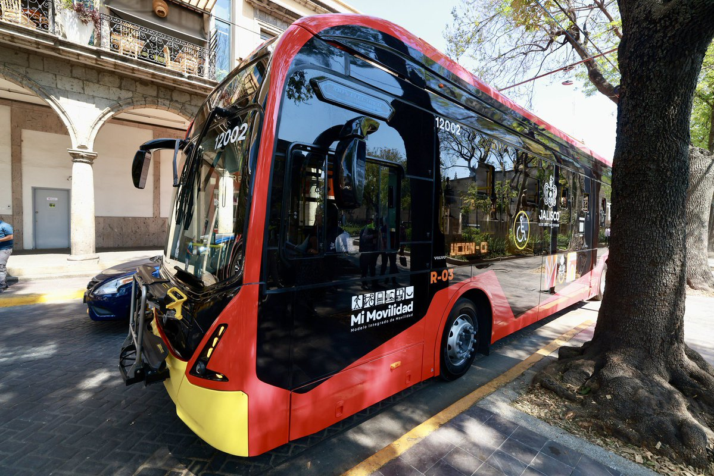
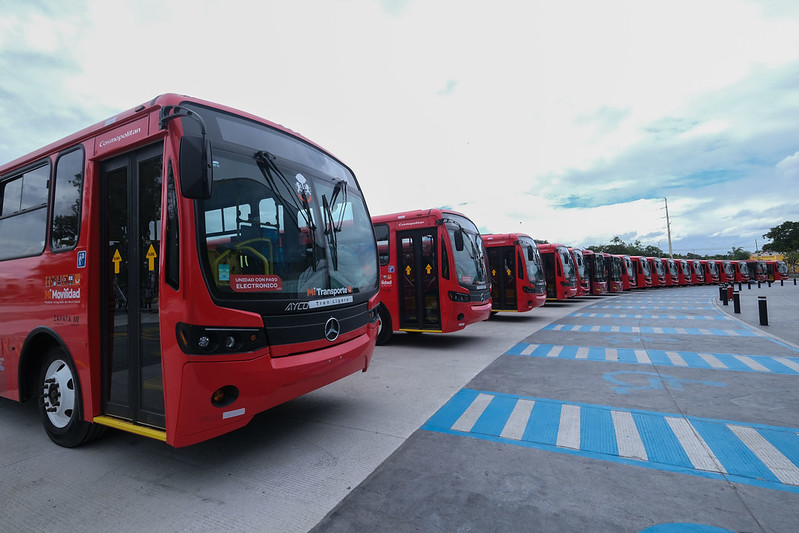
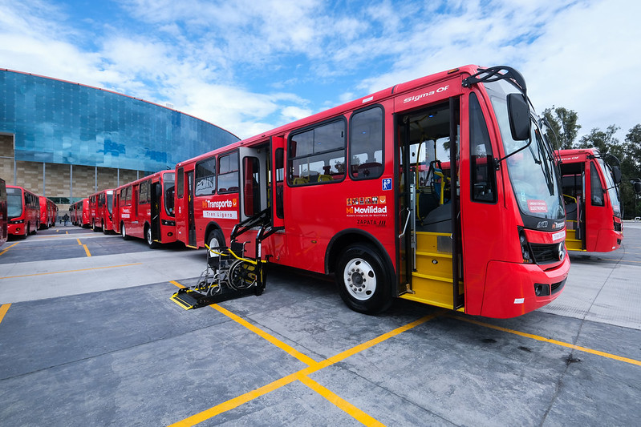

Un espacio ciudadano, independiente y técnico para la movilidad en Jalisco.
Qué hacemos y por qué importa
El Observatorio de Movilidad es una asociación civil sin fines de lucro, independiente y sin afiliación partidista, dedicada a mejorar la movilidad en Jalisco desde una perspectiva técnica y ciudadana. Somos un grupo interdisciplinario integrado por personas investigadoras, especialistas, profesionales y ciudadanos interesados en transformar la forma en que nos movemos.
Compartimos una convicción: la movilidad debe ser segura, accesible e incluyente para todas las personas. Trabajamos con base en evidencia, datos y análisis, pero también desde la experiencia cotidiana de quienes viven la ciudad. Nuestro objetivo es aportar información útil y generar propuestas que ayuden a tomar mejores decisiones públicas.
Basamos nuestro trabajo en evidencia, datos y análisis rigurosos.
Sin afiliación partidista ni intereses particulares.
La información que generamos es pública y accesible para todos.
Creemos en la colaboración entre sociedad y autoridades.
"La movilidad debe ser segura, accesible e incluyente para todas las personas"



Únete a un grupo ciudadano comprometido con mejorar la movilidad en Jalisco desde la evidencia y la participación.
Participa ahora